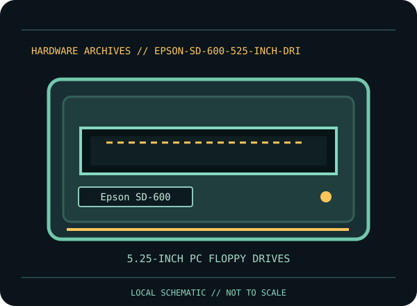

[ INDIVIDUAL COMPONENT // FLOPPY DRIVES ]
Epson SD-600 5.25-inch Floppy Drive
This record identifies a documented physical floppy drive, controller, or preservation interface. It separates confirmed model facts from details that vary by suffix, board revision, host, media and configuration.

IDENTIFICATION NOTE: Match the full model/part number, revision, connector and manual before use. Similar family names do not establish interchangeable mechanics or host compatibility.
Model specifications
| Catalog subcategory | 5.25-inch PC floppy drives |
|---|---|
| Exact model / family | Epson SD-600 |
| Era / product family | Epson SD-series 5.25-inch mechanism |
| Documented characteristics | Epson SD-600 model, documented in a three-page model-specific scan in the Bitsavers Epson floppy archive. No connector, speed, density, or formatted capacity is asserted here because those exact values must be read from the matching scan and unit revision. |
| Interface / connectors | Do not assume a PC 34-pin pinout from the 5.25-inch form factor. Check the SD-600 pages and the unit’s own wiring/connector labeling before energizing or connecting it. |
| Host and media compatibility | Treat the SD-600 as a named mechanism, not as a generic IBM-compatible 360-KB or 1.2-MB drive. Host support and disk formats must be established from the SD-600 documentation, jumper configuration, and controller characteristics. |
Model-specific compatibility checks
- Identify the complete model/suffix, board revision, serial/date codes and connector arrangement from the physical unit; photograph all labels before installation.
- Treat the SD-600 as a named mechanism, not as a generic IBM-compatible 360-KB or 1.2-MB drive. Host support and disk formats must be established from the SD-600 documentation, jumper configuration, and controller characteristics.
- Confirm the host controller, drive wiring, power, drive select, termination, media density and recording format against the cited model documentation. Do not infer a fit or capacity solely from the drive size or connector shape.
Preservation and service notes
Keep all model-specific scan pages with the drive’s provenance. Photograph its full label and board before servicing. Use the correct Epson procedure and a sacrificial disk for read/alignment tests; avoid mixing 40-TPI and 96-TPI alignment references.
Keep original media and raw captures intact. Log the exact drive/controller/software configuration, acquisition date, condition and any service performed; checksum verified copies before creating derivatives.
Manufacturer documentation & sources
- Epson — SD-600 model documentation, page 1Scanned model-specific Epson SD-600 documentation in the archival product folder.
- Epson — SD-600 model documentation, page 2Scanned model-specific Epson SD-600 documentation in the archival product folder.
- Epson — SD-600 model documentation, page 3Scanned model-specific Epson SD-600 documentation in the archival product folder.


Sources are model-specific manufacturer documentation or archival copies of the original source. Where a document covers a family or multiple revisions, confirm its applicability to the exact unit before using an electrical or service specification.